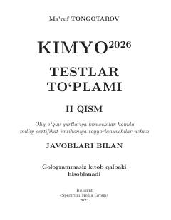

K2Kimyo fanidan milliy sertifikat va OTM imtihonlariga tayyorgarlik uchun testlar to'plami.
Mazkur to'plam oliy o'quv yurtlariga kiruvchilar hamda milliy sertifikat imtihoniga tayyorlanuvchilar uchun mo'ljallangan kimyo fanidan test topshiriqlarini o'z ichiga oladi. Kitobda kimyoviy reaksiyalar tezligi va katalizatorlarga oid masalalar va ularning yechimlari keltirilgan.